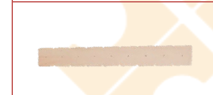
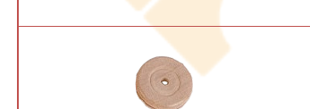
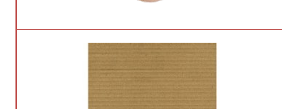
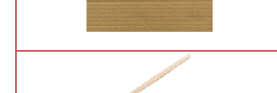
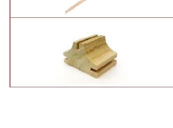
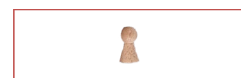
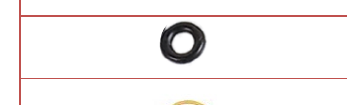
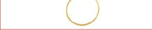

高空運輸車教案
編號 03-P3-01 ・ 難度：高級
本教案以「高空運輸車」纜車玩具為主題，結合螺旋運輸與皮帶傳動原理，讓孩子動手打造能將貨物從一端運送到另一端的高空運輸裝置，並認識台灣早期的運輸智慧。

適合年級
5 歲以上（親子）
教學時間
60 分鐘
難度
高級
教學領域
S 科學・T 技術・E 工程・A 藝術・M 數學
教案類型
STEAM 親子創客教案
課程內容
螺旋運輸與皮帶傳動原理介紹（S）・ 榫接、鋸切、砂磨、膠合、鑽孔技巧（T）・ 組裝、纏繞技巧（E）・ 塑型彩繪（A）・ 點數與刻度（M）
課程流程
木條板榫接組裝架體 ・ 鋁線螺旋纏繞木棒 ・ 輪子與籃子製作掛載 ・ 運輸功能測試 ・ 場景佈置與彩繪美化 ・ 台灣早期運輸工具討論
課程材料
木條板 ×2 片 ・ 木輪子 ×1 個 ・ 紙板 ×3 張 ・ 木棒 ×2 支 ・ T 型木塊 ×2 個（桃花心木） ・ 木棋子 ×1 個 ・ 油封圈 ×4 個 ・ 橡皮筋 ×1 條 ・ 鋁線 ×1 條
其他材料與工具：砂紙、白膠或保麗龍膠、剪刀、鉛筆、橡皮擦、色筆、鑽孔機或手搖鑽、直徑 0.8 公分鑽頭、手工線鋸、尖嘴鉗
延伸學習
台灣早期運輸工具探索 ・ 螺旋與皮帶傳動的生活應用 ・ 故事情境創作與分享表達
學習向度與目標
完整教學步驟
材料清單

木條板
2 片

木輪子
1 個

紙板
3 張

木棒
2 支

T 型木塊
2 個
國產木材：桃花心木

木棋子
1 個

油封圈
4 個

橡皮筋
1 條
鋁線
1 條
其他材料與工具：砂紙、白膠或保麗龍膠、剪刀、鉛筆、橡皮擦、色筆、鑽孔機或手搖鑽、直徑 0.8 公分鑽頭、手工線鋸、尖嘴鉗
情境引導
老婆婆要去一個遙遠的地方，找一種神祕的香菇來做藥材，希望能醫好家中生病的孫子，但是路程實在太遙遠了，想一想，要怎麼讓老婆婆快速又安全的抵達目的地呢？
活動一：製作高空運輸車
- 在木輪子邊緣黏一個木棋子，放置一旁等乾。
- 將木條板鋸切成 2 條 13.5 公分(4 格半)與 1 條 18 公分(6 格)。
- 在步驟二 13.5 公分的木條板上，第一和第四個的孔各鑽一個 0.8 公分的洞。
- 砂磨每個木零件粗糙與銳利的邊緣。
- 將 13.5 公分與 18 公分的木條板分別上膠插入 T 型木塊的卡槽中。
- 將 2 根木棒分別穿過木條板上方與下方的洞中，並用油封圈固定。
- 用螺旋方式（順時鐘或反時鐘都可以），將鋁線纏繞在架子上方木棒上。
- 將步驟一的輪子，穿進下方木棒外側，並黏在木棒上。
- 用剩下的鋁線製作成一個籃子，並留一段折彎，掛到螺旋上。
- 將橡皮筋套上木輪子和上方橫木的木軸。
活動二：啟動高空運輸車
- 找一些可運輸的素材或木珠，放進高空籃子中，試著轉動木輪子上的木棋子，可以順利從起點運輸到終點嗎？
- 試試看，將橡皮筋套在木棋子上轉動，觀察傳動有什麼不同？
活動三：美化
- 用牛皮紙板與剩下來的材料來佈置你的場景，並彩繪你的作品。
活動四：討論
- 分享你的作品，並說一個故事吧！
- 台灣早期也有一個從甲地運送到乙地的運輸工具，你知道是什麼嗎？
注意事項
- 在將木條版卡入 T 型木塊槽的時候，若插不進去，可用砂紙將木條板尾端來回砂磨一下。
- 若使用線鋸時，要戴好護目鏡、手套等護具，並聽從大人的指導，千萬不可自行操作，以免發生危險。
- 在塑型的時候，可以使用砂紙包覆木棒或小木塊，製作成塑型工具。砂磨時要注意避免手不小心被磨到。